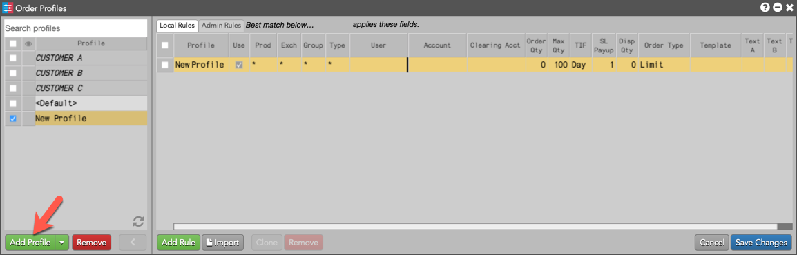
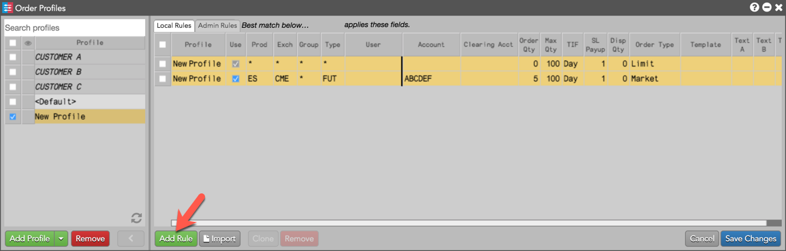
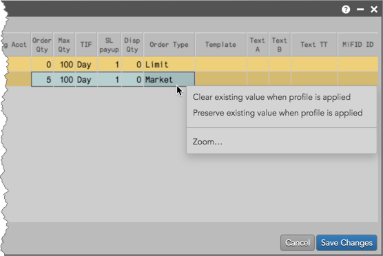
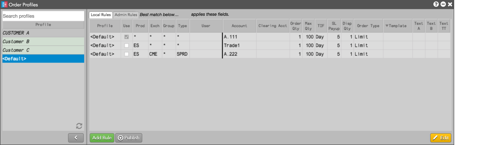
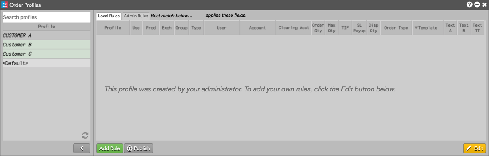
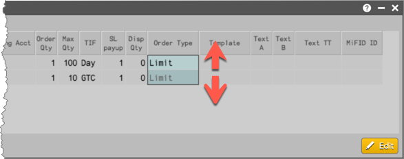
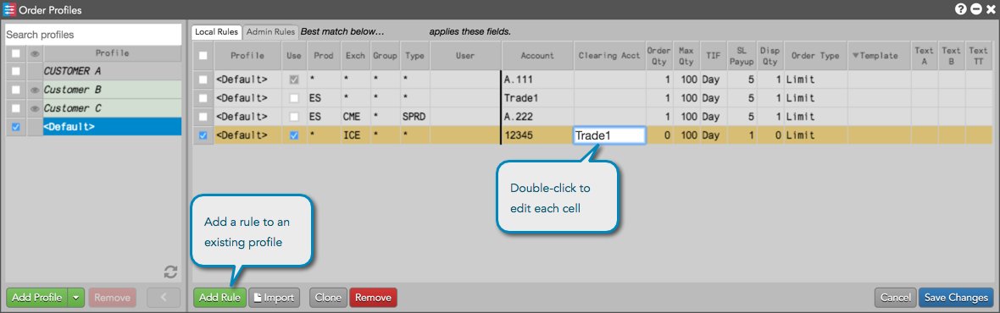
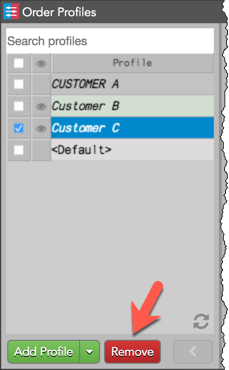

To add an Order Profile:
A new profile name and row in the rules panel are displayed and highlighted yellow.

Tip: As an administrator, click the drop down arrow in the "Add Profile" button to create an admin-controlled profile.
Duplicate profile names are not allowed. The name also appears in the Profile column in the rules panel.
In the applies these fields section in the rule panel, double-click the cell in each column to enter a value.
The default settings display asterisks for the Prod, Exch, Group, and Type cells and cannot be edited. Refer to Order Profiles Reference for a description of each column.
To add a rule to the profile, click Add Rule and double-click a cell in each column to add values as needed.
Note: You cannot have the same combination of product, exchange, product group, and product type in multiple rules.

Tip: Repeat this step to create additional rules for the selected profile.

Tip: Drag the mouse across multiple cells to define the same behavior for each one.
Select one of the following:
Note: By default, neither option is active and if a cell has a value, the field gets set to that value at order entry. If a cell is blank in the Order Profile selected at order entry, the previous value in that field is cleared unless that cell is configured with the Preserve existing value when profile is applied option.
Check the Use column to include the rule in finding a best match for order entry.
You can change or remove a profile, or change and remove rules to existing profiles in edit mode.
To edit an Order Profile:
Tip: You can also double-click a cell in the rule panel to enter edit mode.

Note: Profiles created by your administrator are greyed-out and their fields cannot be edited. However, you can add your own rules to these profiles. Admin profiles created in Order Profiles are shaded green.

Note: The key fields for the default rule cannot be edited.
Tip: Mouse drag up or down to select multiple cells.
To add a rule to the profile you are editing, click Add Rule and edit each column cell as needed.
Tip: If you select a product in the Prod column, the Exch and Type fields will be seeded automatically.
Refer to Order Profiles Reference for a description of each column.

To remove a rule from a profile, select the rule in edit mode and click Remove.
For more details about your editing options, refer to Edit Mode.
To remove an Order Profile:

The button is active when a removable profile is selected.
Note: The default profile and administrator profiles added in Setup cannot be removed.